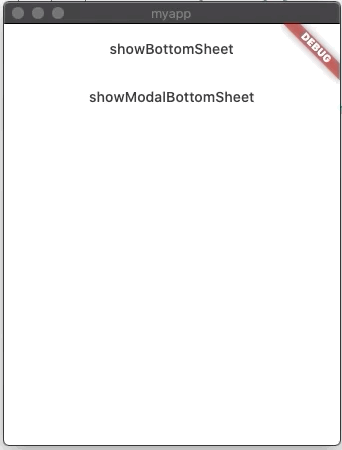

<!DOCTYPE html>
<html lang="en">

<head><meta name="generator" content="Hexo 3.9.0">
  <meta charset="utf-8">
    
  <meta name="viewport" content="width=device-width, initial-scale=1, maximum-scale=1">
  <title>
    flutter--Scaffold以及功能组件介绍 |  MonkeyInWind
  </title>
  
  <link rel="shortcut icon" href="/favicon.ico">
  
  <link rel="stylesheet" href="/css/style.css">
  <script src="/js/pace.min.js"></script>

  

<script type="text/javascript">
(function(i,s,o,g,r,a,m){i['GoogleAnalyticsObject']=r;i[r]=i[r]||function(){
(i[r].q=i[r].q||[]).push(arguments)},i[r].l=1*new Date();a=s.createElement(o),
m=s.getElementsByTagName(o)[0];a.async=1;a.src=g;m.parentNode.insertBefore(a,m)
})(window,document,'script','//www.google-analytics.com/analytics.js','ga');

ga('create', 'UA-155359064-1', 'auto');
ga('send', 'pageview');

</script>


  

</head>

</html>

<body>
  <div id="app">
    <main class="content">
      <section class="outer">
  <article id="post-flutterScaffold" class="article article-type-post" itemscope
  itemprop="blogPost" data-scroll-reveal>

  <div class="article-inner">
    
    <header class="article-header">
       
<h1 class="article-title sea-center" style="border-left:0" itemprop="name">
  flutter--Scaffold以及功能组件介绍
</h1>
  

    </header>
    

    
    <div class="article-meta">
      <a href="/post/flutterScaffold/" class="article-date">
  <time datetime="2020-01-31T10:45:53.000Z" itemprop="datePublished">2020-01-31</time>
</a>
      
    </div>
    

    
    
    <div class="tocbot"></div>


    

    <div class="article-entry" itemprop="articleBody">
      


      

      
      <p><code>Scaffold</code>这个组件在之前的笔记都出现过，但是没有详细的说明，这一篇笔记就来介绍一下。<br>先看<code>constructor</code>。</p>
<a id="more"></a>
<figure class="highlight plain"><table><tr><td class="gutter"><pre><span class="line">1</span><br><span class="line">2</span><br><span class="line">3</span><br><span class="line">4</span><br><span class="line">5</span><br><span class="line">6</span><br><span class="line">7</span><br><span class="line">8</span><br><span class="line">9</span><br><span class="line">10</span><br><span class="line">11</span><br><span class="line">12</span><br><span class="line">13</span><br><span class="line">14</span><br><span class="line">15</span><br><span class="line">16</span><br><span class="line">17</span><br><span class="line">18</span><br><span class="line">19</span><br><span class="line">20</span><br><span class="line">21</span><br><span class="line">22</span><br></pre></td><td class="code"><pre><span class="line">const Scaffold(&#123;</span><br><span class="line">    Key key,</span><br><span class="line">    PreferredSizeWidget appBar,  // 页面顶部标题栏</span><br><span class="line">    Widget body,        // 页面的主体</span><br><span class="line">    Widget floatingActionBotton,  // 悬浮按钮</span><br><span class="line">    FloatingActionButtonLocation floatingActionButtonLocation,  //悬浮按钮的位置</span><br><span class="line">    FloatingActionButtonAnimator floatingActionButtonAnimator,  //悬浮按钮的动画</span><br><span class="line">    List&lt;Widget&gt; persistentFooterButtons,   //底部按钮</span><br><span class="line">    Widget drawer,      //左侧抽屉</span><br><span class="line">    Widget endDrawer,   //右侧抽屉</span><br><span class="line">    Widget bottomNavigationBar,     //底部导航</span><br><span class="line">    Widget bottomSheet,     //底部滑出</span><br><span class="line">    Color backgroundColor,      //背景色</span><br><span class="line">    bool resizeToAvoidBottomPadding,    //已弃用，键盘弹出时是否重新绘制，以避免输入框被遮挡</span><br><span class="line">    bool resizeToAvoidBottomInset,      //键盘弹出时是否重新绘制，以避免输入框被遮挡</span><br><span class="line">    bool primary: true,     //是否计算手机顶部状态栏的高度</span><br><span class="line">    DragStartBehavior drawerDragStartBehavior: DragStartBehavior.start,  //拖动的处理</span><br><span class="line">    bool extendBody: false,     //是否延伸body至底部。</span><br><span class="line">    bool extendBodyBehindAppBar: false,     //是否延伸body至顶部。</span><br><span class="line">    Color drawerScrimColor,     //抽屉遮罩层背景色</span><br><span class="line">    double drawerEdgeDragWidth  //滑动拉出抽屉的生效距离</span><br><span class="line">&#125;)</span><br></pre></td></tr></table></figure>

<h2 id="appBar"><a href="#appBar" class="headerlink" title="appBar"></a>appBar</h2><figure class="highlight plain"><table><tr><td class="gutter"><pre><span class="line">1</span><br><span class="line">2</span><br><span class="line">3</span><br><span class="line">4</span><br><span class="line">5</span><br><span class="line">6</span><br><span class="line">7</span><br><span class="line">8</span><br><span class="line">9</span><br><span class="line">10</span><br><span class="line">11</span><br><span class="line">12</span><br><span class="line">13</span><br><span class="line">14</span><br><span class="line">15</span><br><span class="line">16</span><br><span class="line">17</span><br><span class="line">18</span><br><span class="line">19</span><br><span class="line">20</span><br><span class="line">21</span><br></pre></td><td class="code"><pre><span class="line">AppBar(&#123;</span><br><span class="line">    Key key,</span><br><span class="line">    Widget leading,</span><br><span class="line">    bool automaticallyImplyLeading: true,</span><br><span class="line">    Widget title,</span><br><span class="line">    List&lt;Widget&gt;actions,</span><br><span class="line">    Widget flexibleSpace,</span><br><span class="line">    PreferredSizeWidget bottom,</span><br><span class="line">    double elevation,</span><br><span class="line">    ShapeBorder shape,</span><br><span class="line">    Color backgroundColor,</span><br><span class="line">    Brightness brightness,</span><br><span class="line">    IconThemeData iconTheme,</span><br><span class="line">    IconThemeData actionsIconTheme,</span><br><span class="line">    TextTheme textTheme,</span><br><span class="line">    bool primary: true,</span><br><span class="line">    bool centerTitle,</span><br><span class="line">    double titleSpacing: NavigationToolbar.kMiddleSpacing,</span><br><span class="line">    double toolbarOpacity: 1.0,</span><br><span class="line">    double bottomOpacity: 1.0</span><br><span class="line">&#125;)</span><br></pre></td></tr></table></figure>

<p>先看一张官方文档<code>AppBar</code>的图</p>
<p><br>可以看见，之前只用到<code>AppBar</code>的<code>title</code>，其实这个<code>Widget</code>是很强大的，接下来详细看一下。</p>
<h3 id="leading"><a href="#leading" class="headerlink" title="leading"></a>leading</h3><p>这个之前用过，但是是默认的，就是路由跳转之后，在<code>AppBar</code>左上角有一个返回按钮，就是它。<br>看demo</p>
<figure class="highlight plain"><table><tr><td class="gutter"><pre><span class="line">1</span><br><span class="line">2</span><br><span class="line">3</span><br><span class="line">4</span><br><span class="line">5</span><br><span class="line">6</span><br><span class="line">7</span><br><span class="line">8</span><br><span class="line">9</span><br><span class="line">10</span><br><span class="line">11</span><br><span class="line">12</span><br><span class="line">13</span><br><span class="line">14</span><br><span class="line">15</span><br><span class="line">16</span><br><span class="line">17</span><br><span class="line">18</span><br><span class="line">19</span><br><span class="line">20</span><br><span class="line">21</span><br><span class="line">22</span><br></pre></td><td class="code"><pre><span class="line">import &apos;package:flutter/material.dart&apos;;</span><br><span class="line"></span><br><span class="line">void main() =&gt; runApp(MyApp());</span><br><span class="line"></span><br><span class="line">class MyApp extends StatelessWidget &#123;</span><br><span class="line">  // This widget is the root of your application.</span><br><span class="line">  @override</span><br><span class="line">  Widget build(BuildContext context) &#123;</span><br><span class="line">    return new MaterialApp(</span><br><span class="line">      home: Scaffold(</span><br><span class="line">        appBar: AppBar(</span><br><span class="line">          leading: MaterialButton(</span><br><span class="line">            child: Text(&apos;L&apos;),</span><br><span class="line">            onPressed: () &#123;</span><br><span class="line">              print(&apos;pressed leading&apos;);</span><br><span class="line">            &#125;,</span><br><span class="line">          )</span><br><span class="line">        ),</span><br><span class="line">      )</span><br><span class="line">    );</span><br><span class="line">  &#125;</span><br><span class="line">&#125;</span><br></pre></td></tr></table></figure>

<p>左上角的按钮，在这里用了一个<code>MaterialButton</code>，点击的时候会打印出<code>pressed leading</code>。<br>效果如图<br><br>就是左上角的那个<code>L</code>。  </p>
<h3 id="automaticallyImplyLeading"><a href="#automaticallyImplyLeading" class="headerlink" title="automaticallyImplyLeading"></a>automaticallyImplyLeading</h3><p>这个就牛逼了，如果<code>leading</code>为空,<code>automaticallyImplyLeading</code>值为<code>true</code>的话，就自动推断出<code>leading</code>是什么并创建，比如之前说的返回按钮，再比如加了个<code>Drawer</code>，<code>leading</code>会是一个操作<code>Drawer</code>的按钮，这个就不在这写demo了，看后边。</p>
<h3 id="title"><a href="#title" class="headerlink" title="title"></a>title</h3><p>这个就不细说了，之前的笔记里用过很多次了。</p>
<h3 id="actions"><a href="#actions" class="headerlink" title="actions"></a>actions</h3><p><code>leading</code>在左侧，这个<code>action</code>在右侧，与<code>leading</code>不同的是，<code>action</code>是一个<code>List</code>类型，可以有多个子<code>Widget</code>。</p>
<figure class="highlight plain"><table><tr><td class="gutter"><pre><span class="line">1</span><br><span class="line">2</span><br><span class="line">3</span><br><span class="line">4</span><br><span class="line">5</span><br><span class="line">6</span><br><span class="line">7</span><br><span class="line">8</span><br><span class="line">9</span><br><span class="line">10</span><br><span class="line">11</span><br><span class="line">12</span><br><span class="line">13</span><br><span class="line">14</span><br><span class="line">15</span><br><span class="line">16</span><br><span class="line">17</span><br><span class="line">18</span><br><span class="line">19</span><br><span class="line">20</span><br><span class="line">21</span><br><span class="line">22</span><br><span class="line">23</span><br><span class="line">24</span><br></pre></td><td class="code"><pre><span class="line">import &apos;package:flutter/material.dart&apos;;</span><br><span class="line"></span><br><span class="line">void main() =&gt; runApp(MyApp());</span><br><span class="line"></span><br><span class="line">class MyApp extends StatelessWidget &#123;</span><br><span class="line">  // This widget is the root of your application.</span><br><span class="line">  @override</span><br><span class="line">  Widget build(BuildContext context) &#123;</span><br><span class="line">    return new MaterialApp(</span><br><span class="line">      home: Scaffold(</span><br><span class="line">        appBar: AppBar(</span><br><span class="line">          actions: &lt;Widget&gt;[</span><br><span class="line">            MaterialButton(</span><br><span class="line">              child: Text(&apos;BTN1&apos;)</span><br><span class="line">            ),</span><br><span class="line">            MaterialButton(</span><br><span class="line">              child: Text(&apos;BTN2&apos;)</span><br><span class="line">            )</span><br><span class="line">          ],</span><br><span class="line">        ),</span><br><span class="line">      )</span><br><span class="line">    );</span><br><span class="line">  &#125;</span><br><span class="line">&#125;</span><br></pre></td></tr></table></figure>

<p></p>
<h3 id="flexibleSpace"><a href="#flexibleSpace" class="headerlink" title="flexibleSpace"></a>flexibleSpace</h3><p>一个高度可以自适应的<code>Widget</code>，被标题和工具栏覆盖，看一下demo。</p>
<figure class="highlight plain"><table><tr><td class="gutter"><pre><span class="line">1</span><br><span class="line">2</span><br><span class="line">3</span><br><span class="line">4</span><br><span class="line">5</span><br><span class="line">6</span><br><span class="line">7</span><br><span class="line">8</span><br><span class="line">9</span><br><span class="line">10</span><br><span class="line">11</span><br><span class="line">12</span><br><span class="line">13</span><br><span class="line">14</span><br><span class="line">15</span><br><span class="line">16</span><br><span class="line">17</span><br><span class="line">18</span><br><span class="line">19</span><br><span class="line">20</span><br><span class="line">21</span><br><span class="line">22</span><br><span class="line">23</span><br><span class="line">24</span><br><span class="line">25</span><br></pre></td><td class="code"><pre><span class="line">import &apos;package:flutter/material.dart&apos;;</span><br><span class="line"></span><br><span class="line">void main() =&gt; runApp(MyApp());</span><br><span class="line"></span><br><span class="line">class MyApp extends StatelessWidget &#123;</span><br><span class="line">  // This widget is the root of your application.</span><br><span class="line">  @override</span><br><span class="line">  Widget build(BuildContext context) &#123;</span><br><span class="line">    return new MaterialApp(</span><br><span class="line">      home: Scaffold(</span><br><span class="line">        appBar: AppBar(</span><br><span class="line">          title: Text(</span><br><span class="line">            &apos;title&apos;,</span><br><span class="line">            style: TextStyle(</span><br><span class="line">              color: Colors.red</span><br><span class="line">            )</span><br><span class="line">          ),</span><br><span class="line">          flexibleSpace: FlexibleSpaceBar(</span><br><span class="line">            title:  Text(&apos;flexibleSpace title&apos;)</span><br><span class="line">          ),</span><br><span class="line">        ),</span><br><span class="line">      )</span><br><span class="line">    );</span><br><span class="line">  &#125;</span><br><span class="line">&#125;</span><br></pre></td></tr></table></figure>

<p><br>可以看见两个标题重叠了，并且<code>title</code>覆盖在了<code>flexibleSpace title</code>之上。<br><code>flexibleSpace</code>一般用在<code>SliverAppBar</code>里，<code>SliverAppBar</code>是一个可以随着内容一起滚动的头部，大多数都是在滚动页面改变头部高度时用。</p>
<h3 id="bottom"><a href="#bottom" class="headerlink" title="bottom"></a>bottom</h3><p>布局上和<code>title</code>一行的<code>toolbar</code>同级，但是是底对齐，和<code>toolbar</code>同时出现时会把<code>toolbar</code>顶上去。</p>
<figure class="highlight plain"><table><tr><td class="gutter"><pre><span class="line">1</span><br><span class="line">2</span><br><span class="line">3</span><br><span class="line">4</span><br><span class="line">5</span><br><span class="line">6</span><br><span class="line">7</span><br><span class="line">8</span><br><span class="line">9</span><br><span class="line">10</span><br><span class="line">11</span><br><span class="line">12</span><br><span class="line">13</span><br><span class="line">14</span><br><span class="line">15</span><br><span class="line">16</span><br><span class="line">17</span><br><span class="line">18</span><br><span class="line">19</span><br><span class="line">20</span><br><span class="line">21</span><br><span class="line">22</span><br><span class="line">23</span><br><span class="line">24</span><br><span class="line">25</span><br><span class="line">26</span><br><span class="line">27</span><br><span class="line">28</span><br><span class="line">29</span><br><span class="line">30</span><br><span class="line">31</span><br></pre></td><td class="code"><pre><span class="line">import &apos;package:flutter/material.dart&apos;;</span><br><span class="line"></span><br><span class="line">void main() =&gt; runApp(MyApp());</span><br><span class="line"></span><br><span class="line">class MyApp extends StatelessWidget &#123;</span><br><span class="line">  // This widget is the root of your application.</span><br><span class="line">  @override</span><br><span class="line">  Widget build(BuildContext context) &#123;</span><br><span class="line">    return new MaterialApp(</span><br><span class="line">      home: Scaffold(</span><br><span class="line">        appBar: AppBar(</span><br><span class="line">          leading: MaterialButton(</span><br><span class="line">            child: Text(&apos;H&apos;),</span><br><span class="line">            onPressed: () &#123;</span><br><span class="line"></span><br><span class="line">            &#125;,</span><br><span class="line">          ),</span><br><span class="line">          title: Text(</span><br><span class="line">            &apos;title&apos;,</span><br><span class="line">            style: TextStyle(</span><br><span class="line">              color: Colors.red</span><br><span class="line">            )</span><br><span class="line">          ),</span><br><span class="line">          bottom: PreferredSize(</span><br><span class="line">            child: Text(&apos;bottom&apos;)</span><br><span class="line">          )</span><br><span class="line">        ),</span><br><span class="line">      )</span><br><span class="line">    );</span><br><span class="line">  &#125;</span><br><span class="line">&#125;</span><br></pre></td></tr></table></figure>

<p><br>可以看到<code>title</code>和<code>leading</code>所在的<code>toolbar</code>被顶上去了。</p>
<h3 id="elevation"><a href="#elevation" class="headerlink" title="elevation"></a>elevation</h3><p><code>appBar</code>下方的阴影，默认值是4。</p>
<figure class="highlight plain"><table><tr><td class="gutter"><pre><span class="line">1</span><br><span class="line">2</span><br><span class="line">3</span><br><span class="line">4</span><br><span class="line">5</span><br><span class="line">6</span><br><span class="line">7</span><br><span class="line">8</span><br><span class="line">9</span><br><span class="line">10</span><br><span class="line">11</span><br><span class="line">12</span><br><span class="line">13</span><br><span class="line">14</span><br><span class="line">15</span><br><span class="line">16</span><br><span class="line">17</span><br><span class="line">18</span><br><span class="line">19</span><br><span class="line">20</span><br></pre></td><td class="code"><pre><span class="line">import &apos;package:flutter/material.dart&apos;;</span><br><span class="line"></span><br><span class="line">void main() =&gt; runApp(MyApp());</span><br><span class="line"></span><br><span class="line">class MyApp extends StatelessWidget &#123;</span><br><span class="line">  // This widget is the root of your application.</span><br><span class="line">  @override</span><br><span class="line">  Widget build(BuildContext context) &#123;</span><br><span class="line">    return new MaterialApp(</span><br><span class="line">      home: Scaffold(</span><br><span class="line">        appBar: AppBar(</span><br><span class="line">          title: Text(</span><br><span class="line">            &apos;title&apos;</span><br><span class="line">          ),</span><br><span class="line">          elevation: 10</span><br><span class="line">        ),</span><br><span class="line">      )</span><br><span class="line">    );</span><br><span class="line">  &#125;</span><br><span class="line">&#125;</span><br></pre></td></tr></table></figure>

<p></p>
<h3 id="shape"><a href="#shape" class="headerlink" title="shape"></a>shape</h3><p>设置<code>appBar</code>的形状，常规来说应用场景不会太多。。。</p>
<figure class="highlight plain"><table><tr><td class="gutter"><pre><span class="line">1</span><br><span class="line">2</span><br><span class="line">3</span><br><span class="line">4</span><br><span class="line">5</span><br><span class="line">6</span><br><span class="line">7</span><br><span class="line">8</span><br><span class="line">9</span><br><span class="line">10</span><br><span class="line">11</span><br><span class="line">12</span><br><span class="line">13</span><br><span class="line">14</span><br><span class="line">15</span><br><span class="line">16</span><br><span class="line">17</span><br><span class="line">18</span><br><span class="line">19</span><br><span class="line">20</span><br></pre></td><td class="code"><pre><span class="line">import &apos;package:flutter/material.dart&apos;;</span><br><span class="line"></span><br><span class="line">void main() =&gt; runApp(MyApp());</span><br><span class="line"></span><br><span class="line">class MyApp extends StatelessWidget &#123;</span><br><span class="line">  // This widget is the root of your application.</span><br><span class="line">  @override</span><br><span class="line">  Widget build(BuildContext context) &#123;</span><br><span class="line">    return new MaterialApp(</span><br><span class="line">      home: Scaffold(</span><br><span class="line">        appBar: AppBar(</span><br><span class="line">          title: Text(</span><br><span class="line">            &apos;title&apos;</span><br><span class="line">          ),</span><br><span class="line">          shape: StadiumBorder(),</span><br><span class="line">        ),</span><br><span class="line">      )</span><br><span class="line">    );</span><br><span class="line">  &#125;</span><br><span class="line">&#125;</span><br></pre></td></tr></table></figure>

<p></p>
<figure class="highlight plain"><table><tr><td class="gutter"><pre><span class="line">1</span><br><span class="line">2</span><br><span class="line">3</span><br><span class="line">4</span><br><span class="line">5</span><br><span class="line">6</span><br><span class="line">7</span><br><span class="line">8</span><br><span class="line">9</span><br><span class="line">10</span><br><span class="line">11</span><br><span class="line">12</span><br><span class="line">13</span><br><span class="line">14</span><br><span class="line">15</span><br><span class="line">16</span><br><span class="line">17</span><br><span class="line">18</span><br><span class="line">19</span><br><span class="line">20</span><br></pre></td><td class="code"><pre><span class="line">import &apos;package:flutter/material.dart&apos;;</span><br><span class="line"></span><br><span class="line">void main() =&gt; runApp(MyApp());</span><br><span class="line"></span><br><span class="line">class MyApp extends StatelessWidget &#123;</span><br><span class="line">  // This widget is the root of your application.</span><br><span class="line">  @override</span><br><span class="line">  Widget build(BuildContext context) &#123;</span><br><span class="line">    return new MaterialApp(</span><br><span class="line">      home: Scaffold(</span><br><span class="line">        appBar: AppBar(</span><br><span class="line">          title: Text(</span><br><span class="line">            &apos;title&apos;</span><br><span class="line">          ),</span><br><span class="line">          shape: CircleBorder(),</span><br><span class="line">        ),</span><br><span class="line">      )</span><br><span class="line">    );</span><br><span class="line">  &#125;</span><br><span class="line">&#125;</span><br></pre></td></tr></table></figure>

<p></p>
<h3 id="backgroundColor"><a href="#backgroundColor" class="headerlink" title="backgroundColor"></a>backgroundColor</h3><p>背景色，没啥说的。</p>
<figure class="highlight plain"><table><tr><td class="gutter"><pre><span class="line">1</span><br><span class="line">2</span><br><span class="line">3</span><br><span class="line">4</span><br><span class="line">5</span><br><span class="line">6</span><br><span class="line">7</span><br><span class="line">8</span><br><span class="line">9</span><br><span class="line">10</span><br><span class="line">11</span><br><span class="line">12</span><br><span class="line">13</span><br><span class="line">14</span><br><span class="line">15</span><br><span class="line">16</span><br><span class="line">17</span><br><span class="line">18</span><br><span class="line">19</span><br><span class="line">20</span><br></pre></td><td class="code"><pre><span class="line">import &apos;package:flutter/material.dart&apos;;</span><br><span class="line"></span><br><span class="line">void main() =&gt; runApp(MyApp());</span><br><span class="line"></span><br><span class="line">class MyApp extends StatelessWidget &#123;</span><br><span class="line">  // This widget is the root of your application.</span><br><span class="line">  @override</span><br><span class="line">  Widget build(BuildContext context) &#123;</span><br><span class="line">    return new MaterialApp(</span><br><span class="line">      home: Scaffold(</span><br><span class="line">        appBar: AppBar(</span><br><span class="line">          title: Text(</span><br><span class="line">            &apos;title&apos;</span><br><span class="line">          ),</span><br><span class="line">          backgroundColor: Colors.red,</span><br><span class="line">        ),</span><br><span class="line">      )</span><br><span class="line">    );</span><br><span class="line">  &#125;</span><br><span class="line">&#125;</span><br></pre></td></tr></table></figure>

<p></p>
<h3 id="brightness"><a href="#brightness" class="headerlink" title="brightness"></a>brightness</h3><p>主题色调，两个值<code>Brightness.dark</code>和<code>Brightness.light</code>，没看出什么效果，关于<code>brightness</code>，这里有介绍<a href="/post/flutterButtonWidget/">按钮 各种Button</a></p>
<h3 id="iconTheme"><a href="#iconTheme" class="headerlink" title="iconTheme"></a>iconTheme</h3><p><a href="/post/flutterIconWidget/">图标Icon</a>这里有介绍，不重复了。</p>
<h3 id="actionsIconTheme"><a href="#actionsIconTheme" class="headerlink" title="actionsIconTheme"></a>actionsIconTheme</h3><p>同上。</p>
<h3 id="textTheme"><a href="#textTheme" class="headerlink" title="textTheme"></a>textTheme</h3><p>与<code>iconTheme</code>类似。</p>
<h3 id="primary"><a href="#primary" class="headerlink" title="primary"></a>primary</h3><p><code>appBar</code>是否计算手机顶部状态栏的高度，默认为<code>true</code>，为<code>false</code>时如图</p>
<p></p>
<h3 id="centerTitle"><a href="#centerTitle" class="headerlink" title="centerTitle"></a>centerTitle</h3><p><code>title</code>是否居中，默认为<code>true</code>，为<code>false</code>是居左。</p>
<h3 id="titleSpacing"><a href="#titleSpacing" class="headerlink" title="titleSpacing"></a>titleSpacing</h3><p><code>title</code>和其他元素的距离。</p>
<figure class="highlight plain"><table><tr><td class="gutter"><pre><span class="line">1</span><br><span class="line">2</span><br><span class="line">3</span><br><span class="line">4</span><br><span class="line">5</span><br><span class="line">6</span><br><span class="line">7</span><br><span class="line">8</span><br><span class="line">9</span><br><span class="line">10</span><br><span class="line">11</span><br><span class="line">12</span><br><span class="line">13</span><br><span class="line">14</span><br><span class="line">15</span><br><span class="line">16</span><br><span class="line">17</span><br><span class="line">18</span><br><span class="line">19</span><br><span class="line">20</span><br><span class="line">21</span><br><span class="line">22</span><br><span class="line">23</span><br><span class="line">24</span><br><span class="line">25</span><br><span class="line">26</span><br><span class="line">27</span><br><span class="line">28</span><br><span class="line">29</span><br><span class="line">30</span><br><span class="line">31</span><br><span class="line">32</span><br><span class="line">33</span><br><span class="line">34</span><br><span class="line">35</span><br><span class="line">36</span><br><span class="line">37</span><br><span class="line">38</span><br><span class="line">39</span><br><span class="line">40</span><br><span class="line">41</span><br><span class="line">42</span><br><span class="line">43</span><br></pre></td><td class="code"><pre><span class="line">import &apos;package:flutter/material.dart&apos;;</span><br><span class="line"></span><br><span class="line">void main() =&gt; runApp(MyApp());</span><br><span class="line"></span><br><span class="line">class MyApp extends StatelessWidget &#123;</span><br><span class="line">  // This widget is the root of your application.</span><br><span class="line">  @override</span><br><span class="line">  Widget build(BuildContext context) &#123;</span><br><span class="line">    return new MaterialApp(</span><br><span class="line">      home: Scaffold(</span><br><span class="line">        appBar: AppBar(</span><br><span class="line">          leading: MaterialButton(</span><br><span class="line">            child: Text(&apos;L&apos;),</span><br><span class="line">            onPressed: () &#123;</span><br><span class="line"></span><br><span class="line">            &#125;,</span><br><span class="line">          ),</span><br><span class="line">          title: Text(</span><br><span class="line">            &apos;title&apos;,</span><br><span class="line">          ),</span><br><span class="line">          actions: &lt;Widget&gt;[</span><br><span class="line">            MaterialButton(</span><br><span class="line">              child: Text(&apos;A&apos;),</span><br><span class="line">              onPressed: () &#123;</span><br><span class="line"></span><br><span class="line">              &#125;,</span><br><span class="line">            ),</span><br><span class="line">            MaterialButton(</span><br><span class="line">              child: Text(&apos;B&apos;),</span><br><span class="line">              onPressed: () &#123;</span><br><span class="line"></span><br><span class="line">              &#125;,</span><br><span class="line">            )</span><br><span class="line">          ],</span><br><span class="line">          bottom: PreferredSize(</span><br><span class="line">            child: Text(&apos;bottom&apos;)</span><br><span class="line">          ),</span><br><span class="line">          titleSpacing: 70,</span><br><span class="line">        ),</span><br><span class="line">      )</span><br><span class="line">    );</span><br><span class="line">  &#125;</span><br><span class="line">&#125;</span><br></pre></td></tr></table></figure>

<p><br>设置过大自己内容显示不全，出现了…</p>
<h3 id="toolbarOpacity"><a href="#toolbarOpacity" class="headerlink" title="toolbarOpacity"></a>toolbarOpacity</h3><p><code>toolbar</code>透明度，默认是<code>1.0</code>。</p>
<figure class="highlight plain"><table><tr><td class="gutter"><pre><span class="line">1</span><br><span class="line">2</span><br><span class="line">3</span><br><span class="line">4</span><br><span class="line">5</span><br><span class="line">6</span><br><span class="line">7</span><br><span class="line">8</span><br><span class="line">9</span><br><span class="line">10</span><br><span class="line">11</span><br><span class="line">12</span><br><span class="line">13</span><br><span class="line">14</span><br><span class="line">15</span><br><span class="line">16</span><br><span class="line">17</span><br><span class="line">18</span><br><span class="line">19</span><br><span class="line">20</span><br><span class="line">21</span><br><span class="line">22</span><br><span class="line">23</span><br><span class="line">24</span><br><span class="line">25</span><br><span class="line">26</span><br><span class="line">27</span><br><span class="line">28</span><br><span class="line">29</span><br><span class="line">30</span><br><span class="line">31</span><br><span class="line">32</span><br><span class="line">33</span><br><span class="line">34</span><br><span class="line">35</span><br><span class="line">36</span><br><span class="line">37</span><br><span class="line">38</span><br><span class="line">39</span><br><span class="line">40</span><br><span class="line">41</span><br><span class="line">42</span><br><span class="line">43</span><br></pre></td><td class="code"><pre><span class="line">import &apos;package:flutter/material.dart&apos;;</span><br><span class="line"></span><br><span class="line">void main() =&gt; runApp(MyApp());</span><br><span class="line"></span><br><span class="line">class MyApp extends StatelessWidget &#123;</span><br><span class="line">  // This widget is the root of your application.</span><br><span class="line">  @override</span><br><span class="line">  Widget build(BuildContext context) &#123;</span><br><span class="line">    return new MaterialApp(</span><br><span class="line">      home: Scaffold(</span><br><span class="line">        appBar: AppBar(</span><br><span class="line">          leading: MaterialButton(</span><br><span class="line">            child: Text(&apos;L&apos;),</span><br><span class="line">            onPressed: () &#123;</span><br><span class="line"></span><br><span class="line">            &#125;,</span><br><span class="line">          ),</span><br><span class="line">          title: Text(</span><br><span class="line">            &apos;title&apos;,</span><br><span class="line">          ),</span><br><span class="line">          actions: &lt;Widget&gt;[</span><br><span class="line">            MaterialButton(</span><br><span class="line">              child: Text(&apos;A&apos;),</span><br><span class="line">              onPressed: () &#123;</span><br><span class="line"></span><br><span class="line">              &#125;,</span><br><span class="line">            ),</span><br><span class="line">            MaterialButton(</span><br><span class="line">              child: Text(&apos;B&apos;),</span><br><span class="line">              onPressed: () &#123;</span><br><span class="line"></span><br><span class="line">              &#125;,</span><br><span class="line">            )</span><br><span class="line">          ],</span><br><span class="line">          bottom: PreferredSize(</span><br><span class="line">            child: Text(&apos;bottom&apos;)</span><br><span class="line">          ),</span><br><span class="line">          toolbarOpacity: 0.5</span><br><span class="line">        ),</span><br><span class="line">      )</span><br><span class="line">    );</span><br><span class="line">  &#125;</span><br><span class="line">&#125;</span><br></pre></td></tr></table></figure>

<p><br>貌似只对<code>title</code>生效。</p>
<h3 id="bottomOpacity"><a href="#bottomOpacity" class="headerlink" title="bottomOpacity"></a>bottomOpacity</h3><p><code>bottom</code>的透明度。</p>
<figure class="highlight plain"><table><tr><td class="gutter"><pre><span class="line">1</span><br><span class="line">2</span><br><span class="line">3</span><br><span class="line">4</span><br><span class="line">5</span><br><span class="line">6</span><br><span class="line">7</span><br><span class="line">8</span><br><span class="line">9</span><br><span class="line">10</span><br><span class="line">11</span><br><span class="line">12</span><br><span class="line">13</span><br><span class="line">14</span><br><span class="line">15</span><br><span class="line">16</span><br><span class="line">17</span><br><span class="line">18</span><br><span class="line">19</span><br><span class="line">20</span><br><span class="line">21</span><br><span class="line">22</span><br><span class="line">23</span><br><span class="line">24</span><br><span class="line">25</span><br><span class="line">26</span><br><span class="line">27</span><br><span class="line">28</span><br><span class="line">29</span><br><span class="line">30</span><br><span class="line">31</span><br><span class="line">32</span><br><span class="line">33</span><br><span class="line">34</span><br><span class="line">35</span><br><span class="line">36</span><br><span class="line">37</span><br><span class="line">38</span><br><span class="line">39</span><br><span class="line">40</span><br><span class="line">41</span><br><span class="line">42</span><br><span class="line">43</span><br></pre></td><td class="code"><pre><span class="line">import &apos;package:flutter/material.dart&apos;;</span><br><span class="line"></span><br><span class="line">void main() =&gt; runApp(MyApp());</span><br><span class="line"></span><br><span class="line">class MyApp extends StatelessWidget &#123;</span><br><span class="line">  // This widget is the root of your application.</span><br><span class="line">  @override</span><br><span class="line">  Widget build(BuildContext context) &#123;</span><br><span class="line">    return new MaterialApp(</span><br><span class="line">      home: Scaffold(</span><br><span class="line">        appBar: AppBar(</span><br><span class="line">          leading: MaterialButton(</span><br><span class="line">            child: Text(&apos;L&apos;),</span><br><span class="line">            onPressed: () &#123;</span><br><span class="line"></span><br><span class="line">            &#125;,</span><br><span class="line">          ),</span><br><span class="line">          title: Text(</span><br><span class="line">            &apos;title&apos;,</span><br><span class="line">          ),</span><br><span class="line">          actions: &lt;Widget&gt;[</span><br><span class="line">            MaterialButton(</span><br><span class="line">              child: Text(&apos;A&apos;),</span><br><span class="line">              onPressed: () &#123;</span><br><span class="line"></span><br><span class="line">              &#125;,</span><br><span class="line">            ),</span><br><span class="line">            MaterialButton(</span><br><span class="line">              child: Text(&apos;B&apos;),</span><br><span class="line">              onPressed: () &#123;</span><br><span class="line"></span><br><span class="line">              &#125;,</span><br><span class="line">            )</span><br><span class="line">          ],</span><br><span class="line">          bottom: PreferredSize(</span><br><span class="line">            child: Text(&apos;bottom&apos;)</span><br><span class="line">          ),</span><br><span class="line">          bottomOpacity: 0.5</span><br><span class="line">        ),</span><br><span class="line">      )</span><br><span class="line">    );</span><br><span class="line">  &#125;</span><br><span class="line">&#125;</span><br></pre></td></tr></table></figure>

<p></p>
<h2 id="body"><a href="#body" class="headerlink" title="body"></a>body</h2><p>值是一个<code>Widget</code>，在顶部工具栏和底部菜单栏之间，可以是<code>Container</code>，可以是<code>Text</code>，也可以是<code>Center</code>或者其他。。。</p>
<h2 id="floatingActionBotton"><a href="#floatingActionBotton" class="headerlink" title="floatingActionBotton"></a>floatingActionBotton</h2><p>对于这个<code>Widget</code>在<a href="/post/flutterButtonWidget/">按钮 各种Button</a>中有介绍，这里就不详细说了。</p>
<h2 id="floatingActionButtonLocation"><a href="#floatingActionButtonLocation" class="headerlink" title="floatingActionButtonLocation"></a>floatingActionButtonLocation</h2><p>悬浮按钮的位置<br><code>FloatingActionButtonLocation.endTop</code>：右上角<br><code>FloatingActionButtonLocation.centerFloat</code>：下居中，不贴边<br><code>FloatingActionButtonLocation.centerDocked</code>：下居中贴边<br><code>FloatingActionButtonLocation.endDocked</code>：右下角贴底边<br><code>FloatingActionButtonLocation.endFloat</code>：默认值，右下角不贴边<br><code>FloatingActionButtonLocation.startTop</code>：左上角<br><code>FloatingActionButtonLocation.miniStartTop</code>：左上角，离左侧边框更近一点。<br>这里需要注意，不管左上角还是右上角，全都是悬浮按钮的中心线在顶部边框的位置，也就是有一半按钮在屏外</p>
<figure class="highlight plain"><table><tr><td class="gutter"><pre><span class="line">1</span><br><span class="line">2</span><br><span class="line">3</span><br><span class="line">4</span><br><span class="line">5</span><br><span class="line">6</span><br><span class="line">7</span><br><span class="line">8</span><br><span class="line">9</span><br><span class="line">10</span><br><span class="line">11</span><br><span class="line">12</span><br><span class="line">13</span><br><span class="line">14</span><br><span class="line">15</span><br><span class="line">16</span><br><span class="line">17</span><br><span class="line">18</span><br></pre></td><td class="code"><pre><span class="line">import &apos;package:flutter/material.dart&apos;;</span><br><span class="line"></span><br><span class="line">void main() =&gt; runApp(MyApp());</span><br><span class="line"></span><br><span class="line">class MyApp extends StatelessWidget &#123;</span><br><span class="line">  // This widget is the root of your application.</span><br><span class="line">  @override</span><br><span class="line">  Widget build(BuildContext context) &#123;</span><br><span class="line">    return new MaterialApp(</span><br><span class="line">      home: Scaffold(</span><br><span class="line">        floatingActionButton: FloatingActionButton(</span><br><span class="line">          child: Text(&apos;BTN&apos;),</span><br><span class="line">        ),</span><br><span class="line">        floatingActionButtonLocation: FloatingActionButtonLocation.startTop</span><br><span class="line">      )</span><br><span class="line">    );</span><br><span class="line">  &#125;</span><br><span class="line">&#125;</span><br></pre></td></tr></table></figure>

<p><br>再看一下在底部贴边的效果</p>
<figure class="highlight plain"><table><tr><td class="gutter"><pre><span class="line">1</span><br><span class="line">2</span><br><span class="line">3</span><br><span class="line">4</span><br><span class="line">5</span><br><span class="line">6</span><br><span class="line">7</span><br><span class="line">8</span><br><span class="line">9</span><br><span class="line">10</span><br><span class="line">11</span><br><span class="line">12</span><br><span class="line">13</span><br><span class="line">14</span><br><span class="line">15</span><br><span class="line">16</span><br><span class="line">17</span><br><span class="line">18</span><br></pre></td><td class="code"><pre><span class="line">import &apos;package:flutter/material.dart&apos;;</span><br><span class="line"></span><br><span class="line">void main() =&gt; runApp(MyApp());</span><br><span class="line"></span><br><span class="line">class MyApp extends StatelessWidget &#123;</span><br><span class="line">  // This widget is the root of your application.</span><br><span class="line">  @override</span><br><span class="line">  Widget build(BuildContext context) &#123;</span><br><span class="line">    return new MaterialApp(</span><br><span class="line">      home: Scaffold(</span><br><span class="line">        floatingActionButton: FloatingActionButton(</span><br><span class="line">          child: Text(&apos;BTN&apos;),</span><br><span class="line">        ),</span><br><span class="line">        floatingActionButtonLocation: FloatingActionButtonLocation.centerDocked</span><br><span class="line">      )</span><br><span class="line">    );</span><br><span class="line">  &#125;</span><br><span class="line">&#125;</span><br></pre></td></tr></table></figure>

<p></p>
<h2 id="floatingActionButtonAnimator"><a href="#floatingActionButtonAnimator" class="headerlink" title="floatingActionButtonAnimator"></a>floatingActionButtonAnimator</h2><p>操作<code>floatingActionButton</code>的动画效果，例如旋转、缩放、偏移。<br>具体怎么用还不知道。。。</p>
<h2 id="persistentFooterButtons"><a href="#persistentFooterButtons" class="headerlink" title="persistentFooterButtons"></a>persistentFooterButtons</h2><p>固定在页面下方的一组按钮(不止可以放按钮也可以放其他<code>Widget</code>，按钮比较常见)，不随页面滚动，右对齐，新增的<code>Widget</code>会在最右侧，这个不是底部导航。<br>水平方向空间足够时，按钮会水平排列，空间不足时会竖直排列。</p>
<figure class="highlight plain"><table><tr><td class="gutter"><pre><span class="line">1</span><br><span class="line">2</span><br><span class="line">3</span><br><span class="line">4</span><br><span class="line">5</span><br><span class="line">6</span><br><span class="line">7</span><br><span class="line">8</span><br><span class="line">9</span><br><span class="line">10</span><br><span class="line">11</span><br><span class="line">12</span><br><span class="line">13</span><br><span class="line">14</span><br><span class="line">15</span><br><span class="line">16</span><br><span class="line">17</span><br><span class="line">18</span><br><span class="line">19</span><br><span class="line">20</span><br><span class="line">21</span><br><span class="line">22</span><br><span class="line">23</span><br><span class="line">24</span><br><span class="line">25</span><br><span class="line">26</span><br><span class="line">27</span><br><span class="line">28</span><br><span class="line">29</span><br><span class="line">30</span><br><span class="line">31</span><br><span class="line">32</span><br><span class="line">33</span><br><span class="line">34</span><br><span class="line">35</span><br><span class="line">36</span><br><span class="line">37</span><br><span class="line">38</span><br><span class="line">39</span><br><span class="line">40</span><br><span class="line">41</span><br><span class="line">42</span><br><span class="line">43</span><br><span class="line">44</span><br><span class="line">45</span><br></pre></td><td class="code"><pre><span class="line">import &apos;package:flutter/material.dart&apos;;</span><br><span class="line"></span><br><span class="line">void main() =&gt; runApp(MyApp());</span><br><span class="line"></span><br><span class="line">class MyApp extends StatelessWidget &#123;</span><br><span class="line">  // This widget is the root of your application.</span><br><span class="line">  @override</span><br><span class="line">  Widget build(BuildContext context) &#123;</span><br><span class="line">    return new MaterialApp(</span><br><span class="line">      home: Scaffold(</span><br><span class="line">        persistentFooterButtons: &lt;Widget&gt;[</span><br><span class="line">          MaterialButton(</span><br><span class="line">            child: Text(&apos;BTN1&apos;),</span><br><span class="line">            onPressed: () &#123;</span><br><span class="line">              print(&apos;pressed btn1&apos;);</span><br><span class="line">            &#125;,</span><br><span class="line">          ),</span><br><span class="line">          MaterialButton(</span><br><span class="line">            child: Text(&apos;BTN2&apos;),</span><br><span class="line">            onPressed: () &#123;</span><br><span class="line">              print(&apos;pressed btn2&apos;);</span><br><span class="line">            &#125;,</span><br><span class="line">          ),</span><br><span class="line">          MaterialButton(</span><br><span class="line">            child: Text(&apos;BTN3&apos;),</span><br><span class="line">            onPressed: () &#123;</span><br><span class="line">              print(&apos;pressed btn3&apos;);</span><br><span class="line">            &#125;,</span><br><span class="line">          ),</span><br><span class="line">          MaterialButton(</span><br><span class="line">            child: Text(&apos;BTN4&apos;),</span><br><span class="line">            onPressed: () &#123;</span><br><span class="line">              print(&apos;pressed btn4&apos;);</span><br><span class="line">            &#125;,</span><br><span class="line">          ),</span><br><span class="line">          Container(</span><br><span class="line">            width: 50,</span><br><span class="line">            height: 50,</span><br><span class="line">            color: Colors.red</span><br><span class="line">          )</span><br><span class="line">        ],</span><br><span class="line">      )</span><br><span class="line">    );</span><br><span class="line">  &#125;</span><br><span class="line">&#125;</span><br></pre></td></tr></table></figure>

<p></p>
<h2 id="drawer"><a href="#drawer" class="headerlink" title="drawer"></a>drawer</h2><p>最常见的左抽屉，自带半透明遮罩层，值可以是<code>Container</code>也可以是其他，如<code>Button</code>、<code>Text</code>。<br>这里加上<code>appBar</code>会自动生成一个<code>leading</code>，同时向右滑动也可以拉出抽屉。</p>
<figure class="highlight plain"><table><tr><td class="gutter"><pre><span class="line">1</span><br><span class="line">2</span><br><span class="line">3</span><br><span class="line">4</span><br><span class="line">5</span><br><span class="line">6</span><br><span class="line">7</span><br><span class="line">8</span><br><span class="line">9</span><br><span class="line">10</span><br><span class="line">11</span><br><span class="line">12</span><br><span class="line">13</span><br><span class="line">14</span><br><span class="line">15</span><br><span class="line">16</span><br><span class="line">17</span><br><span class="line">18</span><br><span class="line">19</span><br><span class="line">20</span><br><span class="line">21</span><br></pre></td><td class="code"><pre><span class="line">import &apos;package:flutter/material.dart&apos;;</span><br><span class="line"></span><br><span class="line">void main() =&gt; runApp(MyApp());</span><br><span class="line"></span><br><span class="line">class MyApp extends StatelessWidget &#123;</span><br><span class="line">  // This widget is the root of your application.</span><br><span class="line">  @override</span><br><span class="line">  Widget build(BuildContext context) &#123;</span><br><span class="line">    return new MaterialApp(</span><br><span class="line">      home: Scaffold(</span><br><span class="line">        appBar: AppBar(</span><br><span class="line">          title: Text(&apos;title&apos;)</span><br><span class="line">        ),</span><br><span class="line">        drawer: Container(</span><br><span class="line">          width: 150,</span><br><span class="line">          color: Colors.blue</span><br><span class="line">        )</span><br><span class="line">      )</span><br><span class="line">    );</span><br><span class="line">  &#125;</span><br><span class="line">&#125;</span><br></pre></td></tr></table></figure>

<p><br>如果不想用<code>appBar</code>自带的<code>leading</code>，也可以自定义，flutter提供了<code>ScaffoldState.openDrawer</code>函数。</p>
<h2 id="endDrawer"><a href="#endDrawer" class="headerlink" title="endDrawer"></a>endDrawer</h2><p>右侧抽屉，和左侧一样，两个抽屉可同时存在。</p>
<h2 id="drawerDragStartBehavior"><a href="#drawerDragStartBehavior" class="headerlink" title="drawerDragStartBehavior"></a>drawerDragStartBehavior</h2><p>触发拖拽的时机，有两个值，默认为<code>DragStartBehavior.start</code>，还有<code>DragStartBehavior.down</code>，文档推荐用默认值，试了一下，没感觉两个有明显差别。</p>
<h2 id="drawerScrimColor"><a href="#drawerScrimColor" class="headerlink" title="drawerScrimColor"></a>drawerScrimColor</h2><p>抽屉遮罩层背景色，默认为<code>Colors.black54</code>。</p>
<h2 id="drawerEdgeDragWidth"><a href="#drawerEdgeDragWidth" class="headerlink" title="drawerEdgeDragWidth"></a>drawerEdgeDragWidth</h2><p>滑动拉出抽屉的生效距离，设置为0时不能滑动拉出。</p>
<h2 id="bottomNavigationBar"><a href="#bottomNavigationBar" class="headerlink" title="bottomNavigationBar"></a>bottomNavigationBar</h2><p>这里需要注意的是，值不只可以是<code>BottomNavigationBar</code>，其他<code>Widget</code>也可以，试了一下<code>ListView</code>，不会显示在底部，居上显示，失去了底部导航的意义。<br>底部导航，先看一下<code>constructor</code>。</p>
<figure class="highlight plain"><table><tr><td class="gutter"><pre><span class="line">1</span><br><span class="line">2</span><br><span class="line">3</span><br><span class="line">4</span><br><span class="line">5</span><br><span class="line">6</span><br><span class="line">7</span><br><span class="line">8</span><br><span class="line">9</span><br><span class="line">10</span><br><span class="line">11</span><br><span class="line">12</span><br><span class="line">13</span><br><span class="line">14</span><br><span class="line">15</span><br><span class="line">16</span><br><span class="line">17</span><br><span class="line">18</span><br><span class="line">19</span><br><span class="line">20</span><br><span class="line">21</span><br></pre></td><td class="code"><pre><span class="line">BottomNavigationBar(&#123;</span><br><span class="line">    Key key,</span><br><span class="line">    @required List&lt;BottomNavigationBarItem&gt; items,</span><br><span class="line">    ValueChanged&lt;int&gt; onTap,</span><br><span class="line">    int currentIndex: 0,</span><br><span class="line">    double elevation: 8.0,</span><br><span class="line">    BottomNavigationBarType type,</span><br><span class="line">    Color fixedColor,</span><br><span class="line">    Color backgroundColor,</span><br><span class="line">    double iconSize: 24.0,</span><br><span class="line">    Color selectedItemColor,</span><br><span class="line">    Color unselectedItemColor,</span><br><span class="line">    IconThemeData selectedIconTheme: const IconThemeData(),</span><br><span class="line">    IconThemeData unselectedIconTheme: const IconThemeData(),</span><br><span class="line">    double selectedFontSize: 14.0,</span><br><span class="line">    double unselectedFontSize: 12.0,</span><br><span class="line">    TextStyle selectedLabelStyle,</span><br><span class="line">    TextStyle unselectedLabelStyle,</span><br><span class="line">    bool showSelectedLabels: true,</span><br><span class="line">    bool showUnselectedLabels: true</span><br><span class="line">&#125;)</span><br></pre></td></tr></table></figure>

<h3 id="items"><a href="#items" class="headerlink" title="items"></a>items</h3><p>菜单的按钮</p>
<figure class="highlight plain"><table><tr><td class="gutter"><pre><span class="line">1</span><br><span class="line">2</span><br><span class="line">3</span><br><span class="line">4</span><br><span class="line">5</span><br><span class="line">6</span><br></pre></td><td class="code"><pre><span class="line">BottomNavigationBarItem(&#123;</span><br><span class="line">    @required Widget icon,  //菜单按钮的图标</span><br><span class="line">    Widget title,   //菜单按钮的标题</span><br><span class="line">    Widget activeIcon,  //active状态下的图标</span><br><span class="line">    Color backgroundColor   //背景色，需要type为shifting，否则没有效果</span><br><span class="line">&#125;)</span><br></pre></td></tr></table></figure>

<figure class="highlight plain"><table><tr><td class="gutter"><pre><span class="line">1</span><br><span class="line">2</span><br><span class="line">3</span><br><span class="line">4</span><br><span class="line">5</span><br><span class="line">6</span><br><span class="line">7</span><br><span class="line">8</span><br><span class="line">9</span><br><span class="line">10</span><br><span class="line">11</span><br><span class="line">12</span><br><span class="line">13</span><br><span class="line">14</span><br><span class="line">15</span><br><span class="line">16</span><br><span class="line">17</span><br><span class="line">18</span><br><span class="line">19</span><br><span class="line">20</span><br><span class="line">21</span><br><span class="line">22</span><br><span class="line">23</span><br><span class="line">24</span><br><span class="line">25</span><br><span class="line">26</span><br><span class="line">27</span><br><span class="line">28</span><br><span class="line">29</span><br><span class="line">30</span><br></pre></td><td class="code"><pre><span class="line">import &apos;package:flutter/material.dart&apos;;</span><br><span class="line"></span><br><span class="line">void main() =&gt; runApp(MyApp());</span><br><span class="line"></span><br><span class="line">class MyApp extends StatelessWidget &#123;</span><br><span class="line">  // This widget is the root of your application.</span><br><span class="line">  @override</span><br><span class="line">  Widget build(BuildContext context) &#123;</span><br><span class="line">    return new MaterialApp(</span><br><span class="line">      home: Scaffold(</span><br><span class="line">        bottomNavigationBar: BottomNavigationBar(</span><br><span class="line">          items: &lt;BottomNavigationBarItem&gt;[</span><br><span class="line">            BottomNavigationBarItem(</span><br><span class="line">              icon: Icon(</span><br><span class="line">                Icons.home</span><br><span class="line">              ),</span><br><span class="line">              title: Text(&apos;HOME&apos;),</span><br><span class="line">            ),</span><br><span class="line">            BottomNavigationBarItem(</span><br><span class="line">              icon: Icon(</span><br><span class="line">                Icons.android</span><br><span class="line">              ),</span><br><span class="line">              title: Text(&apos;ANDROID&apos;)</span><br><span class="line">            )</span><br><span class="line">          ],</span><br><span class="line">        )</span><br><span class="line">      )</span><br><span class="line">    );</span><br><span class="line">  &#125;</span><br><span class="line">&#125;</span><br></pre></td></tr></table></figure>

<p><br>接下来给<code>HOME</code>加一个<code>activeIcon</code></p>
<figure class="highlight plain"><table><tr><td class="gutter"><pre><span class="line">1</span><br><span class="line">2</span><br><span class="line">3</span><br><span class="line">4</span><br><span class="line">5</span><br><span class="line">6</span><br><span class="line">7</span><br><span class="line">8</span><br><span class="line">9</span><br><span class="line">10</span><br><span class="line">11</span><br><span class="line">12</span><br><span class="line">13</span><br><span class="line">14</span><br><span class="line">15</span><br><span class="line">16</span><br><span class="line">17</span><br><span class="line">18</span><br><span class="line">19</span><br><span class="line">20</span><br><span class="line">21</span><br><span class="line">22</span><br><span class="line">23</span><br><span class="line">24</span><br><span class="line">25</span><br><span class="line">26</span><br><span class="line">27</span><br><span class="line">28</span><br><span class="line">29</span><br><span class="line">30</span><br><span class="line">31</span><br><span class="line">32</span><br><span class="line">33</span><br></pre></td><td class="code"><pre><span class="line">import &apos;package:flutter/material.dart&apos;;</span><br><span class="line"></span><br><span class="line">void main() =&gt; runApp(MyApp());</span><br><span class="line"></span><br><span class="line">class MyApp extends StatelessWidget &#123;</span><br><span class="line">  // This widget is the root of your application.</span><br><span class="line">  @override</span><br><span class="line">  Widget build(BuildContext context) &#123;</span><br><span class="line">    return new MaterialApp(</span><br><span class="line">      home: Scaffold(</span><br><span class="line">        bottomNavigationBar: BottomNavigationBar(</span><br><span class="line">          items: &lt;BottomNavigationBarItem&gt;[</span><br><span class="line">            BottomNavigationBarItem(</span><br><span class="line">              icon: Icon(</span><br><span class="line">                Icons.home</span><br><span class="line">              ),</span><br><span class="line">              title: Text(&apos;HOME&apos;),</span><br><span class="line">              activeIcon: Icon(</span><br><span class="line">                Icons.done</span><br><span class="line">              )</span><br><span class="line">            ),</span><br><span class="line">            BottomNavigationBarItem(</span><br><span class="line">              icon: Icon(</span><br><span class="line">                Icons.android</span><br><span class="line">              ),</span><br><span class="line">              title: Text(&apos;ANDROID&apos;),</span><br><span class="line">            )</span><br><span class="line">          ],</span><br><span class="line">        )</span><br><span class="line">      )</span><br><span class="line">    );</span><br><span class="line">  &#125;</span><br><span class="line">&#125;</span><br></pre></td></tr></table></figure>

<p></p>
<h3 id="onTap"><a href="#onTap" class="headerlink" title="onTap"></a>onTap</h3><p>点击回调，有个<code>int</code>类型的参数，为点击的索引。</p>
<figure class="highlight plain"><table><tr><td class="gutter"><pre><span class="line">1</span><br><span class="line">2</span><br><span class="line">3</span><br><span class="line">4</span><br><span class="line">5</span><br><span class="line">6</span><br><span class="line">7</span><br><span class="line">8</span><br><span class="line">9</span><br><span class="line">10</span><br><span class="line">11</span><br><span class="line">12</span><br><span class="line">13</span><br><span class="line">14</span><br><span class="line">15</span><br><span class="line">16</span><br><span class="line">17</span><br><span class="line">18</span><br><span class="line">19</span><br><span class="line">20</span><br><span class="line">21</span><br><span class="line">22</span><br><span class="line">23</span><br><span class="line">24</span><br><span class="line">25</span><br><span class="line">26</span><br><span class="line">27</span><br><span class="line">28</span><br><span class="line">29</span><br><span class="line">30</span><br><span class="line">31</span><br><span class="line">32</span><br><span class="line">33</span><br></pre></td><td class="code"><pre><span class="line">import &apos;package:flutter/material.dart&apos;;</span><br><span class="line"></span><br><span class="line">void main() =&gt; runApp(MyApp());</span><br><span class="line"></span><br><span class="line">class MyApp extends StatelessWidget &#123;</span><br><span class="line">  // This widget is the root of your application.</span><br><span class="line">  @override</span><br><span class="line">  Widget build(BuildContext context) &#123;</span><br><span class="line">    return new MaterialApp(</span><br><span class="line">      home: Scaffold(</span><br><span class="line">        bottomNavigationBar: BottomNavigationBar(</span><br><span class="line">          items: &lt;BottomNavigationBarItem&gt;[</span><br><span class="line">            BottomNavigationBarItem(</span><br><span class="line">              icon: Icon(</span><br><span class="line">                Icons.home</span><br><span class="line">              ),</span><br><span class="line">              title: Text(&apos;HOME&apos;),</span><br><span class="line">            ),</span><br><span class="line">            BottomNavigationBarItem(</span><br><span class="line">              icon: Icon(</span><br><span class="line">                Icons.android</span><br><span class="line">              ),</span><br><span class="line">              title: Text(&apos;ANDROID&apos;),</span><br><span class="line">            )</span><br><span class="line">          ],</span><br><span class="line">          onTap: (index)&#123;</span><br><span class="line">            print(index);</span><br><span class="line">          &#125;</span><br><span class="line">        )</span><br><span class="line">      )</span><br><span class="line">    );</span><br><span class="line">  &#125;</span><br><span class="line">&#125;</span><br></pre></td></tr></table></figure>

<p></p>
<h3 id="elevation-1"><a href="#elevation-1" class="headerlink" title="elevation"></a>elevation</h3><p>导航栏的阴影，关于阴影前边有介绍，这里就不重复了。</p>
<h3 id="type"><a href="#type" class="headerlink" title="type"></a>type</h3><p>flutter的这个底部的导航栏，不只提供了一种形式，默认为<code>fixed</code>，就是前边的那种，还有一种<code>shifting</code>，下面来看一下。</p>
<figure class="highlight plain"><table><tr><td class="gutter"><pre><span class="line">1</span><br><span class="line">2</span><br><span class="line">3</span><br><span class="line">4</span><br><span class="line">5</span><br><span class="line">6</span><br><span class="line">7</span><br><span class="line">8</span><br><span class="line">9</span><br><span class="line">10</span><br><span class="line">11</span><br><span class="line">12</span><br><span class="line">13</span><br><span class="line">14</span><br><span class="line">15</span><br><span class="line">16</span><br><span class="line">17</span><br><span class="line">18</span><br><span class="line">19</span><br><span class="line">20</span><br><span class="line">21</span><br><span class="line">22</span><br><span class="line">23</span><br><span class="line">24</span><br><span class="line">25</span><br><span class="line">26</span><br><span class="line">27</span><br><span class="line">28</span><br><span class="line">29</span><br><span class="line">30</span><br><span class="line">31</span><br><span class="line">32</span><br><span class="line">33</span><br><span class="line">34</span><br><span class="line">35</span><br></pre></td><td class="code"><pre><span class="line">import &apos;package:flutter/material.dart&apos;;</span><br><span class="line"></span><br><span class="line">void main() =&gt; runApp(MyApp());</span><br><span class="line"></span><br><span class="line">class MyApp extends StatelessWidget &#123;</span><br><span class="line">  // This widget is the root of your application.</span><br><span class="line">  @override</span><br><span class="line">  Widget build(BuildContext context) &#123;</span><br><span class="line">    return new MaterialApp(</span><br><span class="line">      home: Scaffold(</span><br><span class="line">        bottomNavigationBar: BottomNavigationBar(</span><br><span class="line">          items: &lt;BottomNavigationBarItem&gt;[</span><br><span class="line">            BottomNavigationBarItem(</span><br><span class="line">              icon: Icon(</span><br><span class="line">                Icons.home</span><br><span class="line">              ),</span><br><span class="line">              title: Text(&apos;HOME&apos;),</span><br><span class="line">              backgroundColor: Colors.red</span><br><span class="line">            ),</span><br><span class="line">            BottomNavigationBarItem(</span><br><span class="line">              icon: Icon(</span><br><span class="line">                Icons.android</span><br><span class="line">              ),</span><br><span class="line">              title: Text(&apos;ANDROID&apos;),</span><br><span class="line">            )</span><br><span class="line">          ],</span><br><span class="line">          onTap: (index)&#123;</span><br><span class="line">            print(index);</span><br><span class="line">          &#125;,</span><br><span class="line">          type: BottomNavigationBarType.shifting,</span><br><span class="line">        )</span><br><span class="line">      )</span><br><span class="line">    );</span><br><span class="line">  &#125;</span><br><span class="line">&#125;</span><br></pre></td></tr></table></figure>

<p>可以看到<code>BottomNavigationBarItem</code>的背景色起作用了，只需要在一个设置了，整个导航栏都加上了，尝试了一下分别设置不同的颜色，只有第一个起作用。<br>图标和标题默认为白色，并且不显示标题，<code>active</code>状态下图标会放大，同时标题也会显示出来。</p>
<h3 id="fixedColor"><a href="#fixedColor" class="headerlink" title="fixedColor"></a>fixedColor</h3><p><code>icon</code>和<code>title</code>的颜色。</p>
<h3 id="backgroundColor-1"><a href="#backgroundColor-1" class="headerlink" title="backgroundColor"></a>backgroundColor</h3><p>标题栏的背景色，只在<code>type</code>为<code>fixed</code>时起作用。<br>感觉这有点乱，<code>fixed</code>和<code>shifting</code>背景色设置不统一。</p>
<h3 id="iconSize"><a href="#iconSize" class="headerlink" title="iconSize"></a>iconSize</h3><p><code>icon</code>的大小</p>
<h3 id="selectedItemColor-amp-unselectedItemColor"><a href="#selectedItemColor-amp-unselectedItemColor" class="headerlink" title="selectedItemColor &amp; unselectedItemColor"></a>selectedItemColor &amp; unselectedItemColor</h3><p>这两个放一起，选中和未选中的颜色。</p>
<figure class="highlight plain"><table><tr><td class="gutter"><pre><span class="line">1</span><br><span class="line">2</span><br><span class="line">3</span><br><span class="line">4</span><br><span class="line">5</span><br><span class="line">6</span><br><span class="line">7</span><br><span class="line">8</span><br><span class="line">9</span><br><span class="line">10</span><br><span class="line">11</span><br><span class="line">12</span><br><span class="line">13</span><br><span class="line">14</span><br><span class="line">15</span><br><span class="line">16</span><br><span class="line">17</span><br><span class="line">18</span><br><span class="line">19</span><br><span class="line">20</span><br><span class="line">21</span><br><span class="line">22</span><br><span class="line">23</span><br><span class="line">24</span><br><span class="line">25</span><br><span class="line">26</span><br><span class="line">27</span><br><span class="line">28</span><br><span class="line">29</span><br><span class="line">30</span><br><span class="line">31</span><br><span class="line">32</span><br><span class="line">33</span><br><span class="line">34</span><br><span class="line">35</span><br></pre></td><td class="code"><pre><span class="line">import &apos;package:flutter/material.dart&apos;;</span><br><span class="line"></span><br><span class="line">void main() =&gt; runApp(MyApp());</span><br><span class="line"></span><br><span class="line">class MyApp extends StatelessWidget &#123;</span><br><span class="line">  // This widget is the root of your application.</span><br><span class="line">  @override</span><br><span class="line">  Widget build(BuildContext context) &#123;</span><br><span class="line">    return new MaterialApp(</span><br><span class="line">      home: Scaffold(</span><br><span class="line">        bottomNavigationBar: BottomNavigationBar(</span><br><span class="line">          items: &lt;BottomNavigationBarItem&gt;[</span><br><span class="line">            BottomNavigationBarItem(</span><br><span class="line">              icon: Icon(</span><br><span class="line">                Icons.home</span><br><span class="line">              ),</span><br><span class="line">              title: Text(&apos;HOME&apos;),</span><br><span class="line">            ),</span><br><span class="line">            BottomNavigationBarItem(</span><br><span class="line">              icon: Icon(</span><br><span class="line">                Icons.android</span><br><span class="line">              ),</span><br><span class="line">              title: Text(&apos;ANDROID&apos;),</span><br><span class="line">            )</span><br><span class="line">          ],</span><br><span class="line">          onTap: (index)&#123;</span><br><span class="line">            print(index);</span><br><span class="line">          &#125;,</span><br><span class="line">          selectedItemColor: Colors.red,</span><br><span class="line">          unselectedItemColor: Colors.green</span><br><span class="line">        )</span><br><span class="line">      )</span><br><span class="line">    );</span><br><span class="line">  &#125;</span><br><span class="line">&#125;</span><br></pre></td></tr></table></figure>

<p><br>红配绿</p>
<h3 id="selectedIconTheme-amp-unselectedIconTheme"><a href="#selectedIconTheme-amp-unselectedIconTheme" class="headerlink" title="selectedIconTheme &amp; unselectedIconTheme"></a>selectedIconTheme &amp; unselectedIconTheme</h3><p>这个和前边那两个颜色类似，是主题。</p>
<h3 id="selectedFontSize-amp-unselectedFontSize"><a href="#selectedFontSize-amp-unselectedFontSize" class="headerlink" title="selectedFontSize &amp; unselectedFontSize"></a>selectedFontSize &amp; unselectedFontSize</h3><p>选中和未选中的字体大小</p>
<h3 id="selectedLabelStyle-amp-unselectedLabelStyle"><a href="#selectedLabelStyle-amp-unselectedLabelStyle" class="headerlink" title="selectedLabelStyle &amp; unselectedLabelStyle"></a>selectedLabelStyle &amp; unselectedLabelStyle</h3><p>两种状态下的文字样式，关于文字的样式看这里<a href="/post/flutterTextWidget/">hello world和文本组件Text、TextSpan</a></p>
<h3 id="showSelectedLabels-amp-showUnselectedLabels"><a href="#showSelectedLabels-amp-showUnselectedLabels" class="headerlink" title="showSelectedLabels &amp; showUnselectedLabels"></a>showSelectedLabels &amp; showUnselectedLabels</h3><p>是否显示选中 / 为选中的<code>title</code>默认都是<code>true</code>，<code>false</code>时不显示。</p>
<h3 id="currentIndex"><a href="#currentIndex" class="headerlink" title="currentIndex"></a>currentIndex</h3><p>选中的索引</p>
<figure class="highlight plain"><table><tr><td class="gutter"><pre><span class="line">1</span><br><span class="line">2</span><br><span class="line">3</span><br><span class="line">4</span><br><span class="line">5</span><br><span class="line">6</span><br><span class="line">7</span><br><span class="line">8</span><br><span class="line">9</span><br><span class="line">10</span><br><span class="line">11</span><br><span class="line">12</span><br><span class="line">13</span><br><span class="line">14</span><br><span class="line">15</span><br><span class="line">16</span><br><span class="line">17</span><br><span class="line">18</span><br><span class="line">19</span><br><span class="line">20</span><br><span class="line">21</span><br><span class="line">22</span><br><span class="line">23</span><br><span class="line">24</span><br><span class="line">25</span><br><span class="line">26</span><br><span class="line">27</span><br><span class="line">28</span><br><span class="line">29</span><br><span class="line">30</span><br><span class="line">31</span><br></pre></td><td class="code"><pre><span class="line">import &apos;package:flutter/material.dart&apos;;</span><br><span class="line"></span><br><span class="line">void main() =&gt; runApp(MyApp());</span><br><span class="line"></span><br><span class="line">class MyApp extends StatelessWidget &#123;</span><br><span class="line">  // This widget is the root of your application.</span><br><span class="line">  @override</span><br><span class="line">  Widget build(BuildContext context) &#123;</span><br><span class="line">    return new MaterialApp(</span><br><span class="line">      home: Scaffold(</span><br><span class="line">        bottomNavigationBar: BottomNavigationBar(</span><br><span class="line">          items: &lt;BottomNavigationBarItem&gt;[</span><br><span class="line">            BottomNavigationBarItem(</span><br><span class="line">              icon: Icon(</span><br><span class="line">                Icons.home</span><br><span class="line">              ),</span><br><span class="line">              title: Text(&apos;HOME&apos;),</span><br><span class="line">            ),</span><br><span class="line">            BottomNavigationBarItem(</span><br><span class="line">              icon: Icon(</span><br><span class="line">                Icons.android</span><br><span class="line">              ),</span><br><span class="line">              title: Text(&apos;ANDROID&apos;),</span><br><span class="line">            )</span><br><span class="line">          ],</span><br><span class="line">          currentIndex: 1</span><br><span class="line">        )</span><br><span class="line">      )</span><br><span class="line">    );</span><br><span class="line">  &#125;</span><br><span class="line">&#125;</span><br></pre></td></tr></table></figure>

<p></p>
<h2 id="bottomSheet"><a href="#bottomSheet" class="headerlink" title="bottomSheet"></a>bottomSheet</h2><p>底部滑出的组件。<br>先看一个最简单的<code>demo</code>。</p>
<figure class="highlight plain"><table><tr><td class="gutter"><pre><span class="line">1</span><br><span class="line">2</span><br><span class="line">3</span><br><span class="line">4</span><br><span class="line">5</span><br><span class="line">6</span><br><span class="line">7</span><br><span class="line">8</span><br><span class="line">9</span><br><span class="line">10</span><br><span class="line">11</span><br><span class="line">12</span><br><span class="line">13</span><br><span class="line">14</span><br><span class="line">15</span><br><span class="line">16</span><br><span class="line">17</span><br><span class="line">18</span><br><span class="line">19</span><br><span class="line">20</span><br><span class="line">21</span><br></pre></td><td class="code"><pre><span class="line">import &apos;package:flutter/material.dart&apos;;</span><br><span class="line"></span><br><span class="line">void main() =&gt; runApp(MyApp());</span><br><span class="line"></span><br><span class="line">class MyApp extends StatelessWidget &#123;</span><br><span class="line">  // This widget is the root of your application.</span><br><span class="line">  @override</span><br><span class="line">  Widget build(BuildContext context) &#123;</span><br><span class="line">    return new MaterialApp(</span><br><span class="line">      home: Scaffold(</span><br><span class="line">        bottomSheet:Container(</span><br><span class="line">          height: 100,</span><br><span class="line">          color: Colors.red,</span><br><span class="line">          child: Center(</span><br><span class="line">            child: Text(&apos;bottomSheet&apos;)</span><br><span class="line">          )</span><br><span class="line">        ),</span><br><span class="line">      )</span><br><span class="line">    );</span><br><span class="line">  &#125;</span><br><span class="line">&#125;</span><br></pre></td></tr></table></figure>

<p><br>这就完成了，这种东西用在哪里？微信聊天界面底部，是不是有个输入框和一个按钮，就可以用这个实现。<br>有人会问，这是固定在底部的，也不是滑出来的啊，往下看。<br>想要弹出的话需要用<code>showBottomSheet</code>或者<code>showModalBottomSheet</code>方法，区别就是一个没有半透明遮罩层，一个有半透明遮罩层并且点击遮罩层会关闭。</p>
<figure class="highlight plain"><table><tr><td class="gutter"><pre><span class="line">1</span><br><span class="line">2</span><br><span class="line">3</span><br><span class="line">4</span><br><span class="line">5</span><br><span class="line">6</span><br><span class="line">7</span><br><span class="line">8</span><br><span class="line">9</span><br><span class="line">10</span><br><span class="line">11</span><br><span class="line">12</span><br><span class="line">13</span><br><span class="line">14</span><br><span class="line">15</span><br><span class="line">16</span><br><span class="line">17</span><br><span class="line">18</span><br><span class="line">19</span><br><span class="line">20</span><br><span class="line">21</span><br><span class="line">22</span><br><span class="line">23</span><br><span class="line">24</span><br><span class="line">25</span><br><span class="line">26</span><br><span class="line">27</span><br><span class="line">28</span><br><span class="line">29</span><br><span class="line">30</span><br><span class="line">31</span><br><span class="line">32</span><br><span class="line">33</span><br><span class="line">34</span><br><span class="line">35</span><br><span class="line">36</span><br><span class="line">37</span><br><span class="line">38</span><br><span class="line">39</span><br><span class="line">40</span><br><span class="line">41</span><br><span class="line">42</span><br><span class="line">43</span><br><span class="line">44</span><br><span class="line">45</span><br><span class="line">46</span><br><span class="line">47</span><br><span class="line">48</span><br><span class="line">49</span><br><span class="line">50</span><br><span class="line">51</span><br><span class="line">52</span><br><span class="line">53</span><br><span class="line">54</span><br><span class="line">55</span><br><span class="line">56</span><br><span class="line">57</span><br></pre></td><td class="code"><pre><span class="line">import &apos;package:flutter/material.dart&apos;;</span><br><span class="line"></span><br><span class="line">void main() =&gt; runApp(MyApp());</span><br><span class="line"></span><br><span class="line">class MyApp extends StatelessWidget &#123;</span><br><span class="line">  @override</span><br><span class="line">  Widget build(BuildContext context) &#123;</span><br><span class="line">    return new MaterialApp(</span><br><span class="line">      home: Scaffold(</span><br><span class="line">        body: Builder(</span><br><span class="line">          builder: (BuildContext context)&#123;</span><br><span class="line">            return Center(</span><br><span class="line">              child: ListView(</span><br><span class="line">                children: &lt;Widget&gt;[</span><br><span class="line">                  MaterialButton(</span><br><span class="line">                    child: Text(&apos;showBottomSheet&apos;),</span><br><span class="line">                    onPressed: () &#123;</span><br><span class="line">                      showBottomSheet(</span><br><span class="line">                        context: context,</span><br><span class="line">                        builder: (context) &#123;</span><br><span class="line">                          return Container(</span><br><span class="line">                            height: 100,</span><br><span class="line">                            color: Colors.red,</span><br><span class="line">                            child: Center(</span><br><span class="line">                              child: Text(&apos;bottomSheet&apos;)</span><br><span class="line">                            )</span><br><span class="line">                          );</span><br><span class="line">                        &#125;</span><br><span class="line">                      );</span><br><span class="line">                    &#125;</span><br><span class="line">                  ),</span><br><span class="line">                  MaterialButton(</span><br><span class="line">                    child: Text(&apos;showModalBottomSheet&apos;),</span><br><span class="line">                    onPressed: () &#123;</span><br><span class="line">                      showModalBottomSheet(</span><br><span class="line">                        context: context,</span><br><span class="line">                        builder: (context) &#123;</span><br><span class="line">                          return Container(</span><br><span class="line">                            height: 100,</span><br><span class="line">                            color: Colors.blue,</span><br><span class="line">                            child: Center(</span><br><span class="line">                                child: Text(&apos;bottomSheet&apos;)</span><br><span class="line">                            )</span><br><span class="line">                          );</span><br><span class="line">                        &#125;</span><br><span class="line">                      );</span><br><span class="line">                    &#125;,</span><br><span class="line">                  )</span><br><span class="line">                ],</span><br><span class="line">              )</span><br><span class="line">            );</span><br><span class="line">          &#125;</span><br><span class="line">        )</span><br><span class="line">      )</span><br><span class="line">    );</span><br><span class="line">  &#125;</span><br><span class="line">&#125;</span><br></pre></td></tr></table></figure>

<p><br>这里需要注意一点就是<code>body</code>需要用<code>Builder</code>包一下，否则会找不到<code>Scaffold</code>。</p>
<h2 id="backgroundColor-2"><a href="#backgroundColor-2" class="headerlink" title="backgroundColor"></a>backgroundColor</h2><p>背景色。</p>
<h2 id="resizeToAvoidBottomPadding-amp-resizeToAvoidBottomInset"><a href="#resizeToAvoidBottomPadding-amp-resizeToAvoidBottomInset" class="headerlink" title="resizeToAvoidBottomPadding &amp; resizeToAvoidBottomInset"></a>resizeToAvoidBottomPadding &amp; resizeToAvoidBottomInset</h2><p>当键盘弹出时是否重新绘制以避免输入框被遮挡，默认为<code>true</code>。<code>resizeToAvoidBottomPadding</code>已弃用，目前还可以用。</p>
<figure class="highlight plain"><table><tr><td class="gutter"><pre><span class="line">1</span><br><span class="line">2</span><br><span class="line">3</span><br><span class="line">4</span><br><span class="line">5</span><br><span class="line">6</span><br><span class="line">7</span><br><span class="line">8</span><br><span class="line">9</span><br><span class="line">10</span><br><span class="line">11</span><br><span class="line">12</span><br><span class="line">13</span><br><span class="line">14</span><br><span class="line">15</span><br><span class="line">16</span><br><span class="line">17</span><br><span class="line">18</span><br><span class="line">19</span><br><span class="line">20</span><br><span class="line">21</span><br><span class="line">22</span><br><span class="line">23</span><br><span class="line">24</span><br><span class="line">25</span><br><span class="line">26</span><br><span class="line">27</span><br></pre></td><td class="code"><pre><span class="line">import &apos;package:flutter/material.dart&apos;;</span><br><span class="line"></span><br><span class="line">void main() =&gt; runApp(MyApp());</span><br><span class="line"></span><br><span class="line">class MyApp extends StatelessWidget &#123;</span><br><span class="line">  @override</span><br><span class="line">  Widget build(BuildContext context) &#123;</span><br><span class="line">    return new MaterialApp(</span><br><span class="line">      home: Scaffold(</span><br><span class="line">        resizeToAvoidBottomPadding: true,</span><br><span class="line">        body: ListView(</span><br><span class="line">          children: &lt;Widget&gt;[</span><br><span class="line">            Container(</span><br><span class="line">              height: 400,</span><br><span class="line">              color: Colors.blue</span><br><span class="line">            ),</span><br><span class="line">            TextField(),</span><br><span class="line">            Container(</span><br><span class="line">              height: 100,</span><br><span class="line">              color: Colors.red</span><br><span class="line">            )</span><br><span class="line">          ],</span><br><span class="line">        )</span><br><span class="line">      )</span><br><span class="line">    );</span><br><span class="line">  &#125;</span><br><span class="line">&#125;</span><br></pre></td></tr></table></figure>

<p></p>
<h2 id="primary-1"><a href="#primary-1" class="headerlink" title="primary"></a>primary</h2><p>和<code>appBar</code>的<code>primary</code>类似。</p>
<h2 id="extendBody"><a href="#extendBody" class="headerlink" title="extendBody"></a>extendBody</h2><p>如果设为<code>true</code>，当有<code>bottomNavigationBar</code>或者<code>bottomSheet</code>时<code>body</code>会延伸到下方，也就是说有一部分内容可能会被遮挡。</p>
<h2 id="extendBodyBehindAppBar"><a href="#extendBodyBehindAppBar" class="headerlink" title="extendBodyBehindAppBar"></a>extendBodyBehindAppBar</h2><p>与<code>extendBody</code>类似，是否延伸到<code>appBar</code>下方。</p>

      
      <!-- 打赏 -->
      
    </div>
    <footer class="article-footer">
      <!-- 
      <a data-url="http://yoursite.com/post/flutterScaffold/" data-id="ck66fuvch000okkhsmspk2xyn"
        class="article-share-link">分享</a>
      
       -->
    </footer>

  </div>

  
  
  <nav class="article-nav">
    
      <a href="/post/flutterRowColumnFlex/" class="article-nav-link">
        <strong class="article-nav-caption">上一篇</strong>
        <div class="article-nav-title">
          
            flutter--Row &amp; Column线性布局、Flex &amp; Expanded弹性布局
          
        </div>
      </a>
    
    
      <a href="/post/ElectronUnsafeEval/" class="article-nav-link">
        <strong class="article-nav-caption">下一篇</strong>
        <div class="article-nav-title">electron &#39;unsafe-eval&#39;</div>
      </a>
    
  </nav>


  

  
  
<!-- valine评论 -->
<div id="vcomments-box">
    <div id="vcomments">
    </div>
</div>
<script src="//cdn1.lncld.net/static/js/3.0.4/av-min.js"></script>
<script src='https://cdn.jsdelivr.net/npm/valine@1.3.10/dist/Valine.min.js'></script>
<script>
    new Valine({
        el: '#vcomments',
        notify: false,
        verify: false,
        app_id: '',
        app_key: '',
        path: window.location.pathname,
        avatar: 'mp',
        placeholder: '给我的文章加点评论吧~',
        recordIP: true
    });
    const infoEle = document.querySelector('#vcomments .info');
    if (infoEle && infoEle.childNodes && infoEle.childNodes.length > 0) {
        infoEle.childNodes.forEach(function (item) {
            item.parentNode.removeChild(item);
        });
    }
</script>
<style>
    #vcomments-box {
        padding: 5px 30px;
    }

    @media screen and (max-width: 800px) {
        #vcomments-box {
            padding: 5px 0px;
        }
    }

    #vcomments-box #vcomments {
        background-color: #fff;
    }

    .v .vlist .vcard .vh {
        padding-right: 20px;
    }

    .v .vlist .vcard {
        padding-left: 10px;
    }
</style>

  

  
  
  

</article>

</section>
      <footer class="footer">
  <div class="outer">
    <ul class="list-inline">
      <li>
        &copy;
        2020-02
        MonkeyInWind
      </li>
      <li>
        <!--
        
          Power by
        
        
        <a href="https://hexo.io" target="_blank">Hexo</a> Theme <a href="https://github.com/Shen-Yu/hexo-theme-ayer" target="_blank">Ayer</a>
        
        -->
        <a target="_blank" href='https://github.com/MonkeyInWind'>GitHub</a>
      </li>
    </ul>
    <ul class="list-inline">
      <li>
        
      </li>
      <li>
        <!-- cnzz统计 -->
        
      </li>
    </ul>
  </div>
</footer>

    <div class="to_top">
        <div class="totop" id="totop">
  <i class="ri-arrow-up-line"></i>
</div>
      </div>
    </main>
    
    <aside class="sidebar">
      
        <button class="navbar-toggle"></button>
<nav class="navbar">
  
  <div class="logo">
    <a href="/"></a>
  </div>
  
  <ul class="nav nav-main">
    
    <li class="nav-item">
      <a class="nav-item-link" href="/">主页</a>
    </li>
    
    <li class="nav-item">
      <a class="nav-item-link" href="/archives">目录</a>
    </li>
    
    <li class="nav-item">
      <a class="nav-item-link" href="/Categories">分类</a>
    </li>
    
    <li class="nav-item">
      <a class="nav-item-link" href="/About">关于我</a>
    </li>
    
  </ul>
</nav>
<nav class="navbar navbar-bottom">
  <ul class="nav">
    <li class="nav-item">
      
      <a class="nav-item-link nav-item-search"  title="Search">
        <i class="ri-search-line"></i>
      </a>
      
      
    </li>
  </ul>
</nav>
<div class="search-form-wrap">
  <div class="local-search local-search-plugin">
  <input type="search" id="local-search-input" class="local-search-input" placeholder="Search...">
  <div id="local-search-result" class="local-search-result"></div>
</div>
</div>
      </aside>
      <div id="mask"></div>

<!-- #reward -->
<div id="reward">
  <span class="close"><i class="ri-close-line"></i></span>
  <p class="reward-p"><i class="ri-cup-line"></i>请我喝杯咖啡吧~</p>
  <div class="reward-box">
    
    
  </div>
</div>
      <script src="/js/jquery-2.0.3.min.js"></script>
<script src="/js/jquery.justifiedGallery.min.js"></script>
<script src="/js/lazyload.min.js"></script>
<script src="/js/busuanzi-2.3.pure.min.js"></script>

  <script src="/fancybox/jquery.fancybox.min.js"></script>


  <script src="/js/tocbot.min.js"></script>
  <script>
    // Tocbot_v4.7.0  http://tscanlin.github.io/tocbot/
    tocbot.init({
      tocSelector: '.tocbot',
      contentSelector: '.article-entry',
      headingSelector: 'h1, h2, h3, h4, h5, h6',
      hasInnerContainers: true,
      scrollSmooth: true,
      positionFixedSelector: '.tocbot',
      positionFixedClass: 'is-position-fixed',
      fixedSidebarOffset: 'auto',
    });
  </script>


<script>
  var ayerConfig = {
    mathjax: false
  }
</script>

<script src="/js/ayer.js"></script>

<script src="https://cdn.jsdelivr.net/npm/jquery-modal@0.9.2/jquery.modal.min.js"></script>
<link rel="stylesheet" href="https://cdn.jsdelivr.net/npm/jquery-modal@0.9.2/jquery.modal.min.css">


<script type="text/javascript" src="https://js.users.51.la/20544303.js"></script>
  
  
  </div>
</body>

</html>